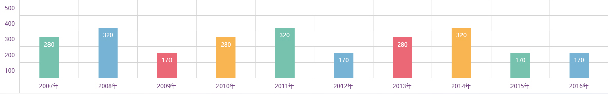

教学工作质量单位：篇

| 学年 | 学期 | 教学起止日期 | 教学终止日期 | 教学内容 | 工作量 |
| 2014 | 春季学期 | 2014-5-5 | 2014-5-9 | 法律事务 | 12 |
| 2014 | 春季学期 | 2014-5-5 | 2014-5-9 | 农业科技 | 12 |
| 2014 | 春季学期 | 2014-5-5 | 2014-5-9 | 法律事务 | 12 |
| 2014 | 春季学期 | 2014-5-5 | 2014-5-9 | 法律事务 | 5 |
| 2014 | 冬季学期 | 2014-5-5 | 2016-8-19 | 电子商务 | 12 |
| 2014 | 春季学期 | 2014-5-5 | 2012-15-9 | 法律事务 | 10 |
| 2014 | 冬季学期 | 2014-5-5 | 2014-5-9 | 信息产业td> | |
| 2014 | 春季学期 | 2014-5-5 | 2014-5-9 | 法律事务 | 12 |
| 2014 | 春季学期 | 2014-5-5 | 2014-5-9 | 经融 | 2 |
| 2014 | 秋季学期 | 2014-5-5 | 2014-5-9 | 法律事务 | 12 |